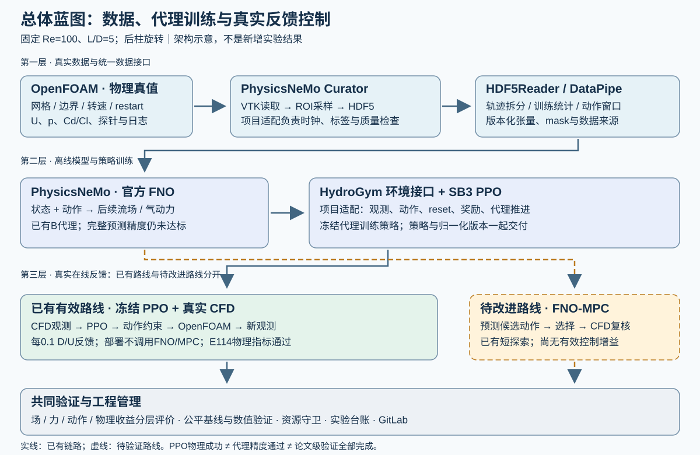
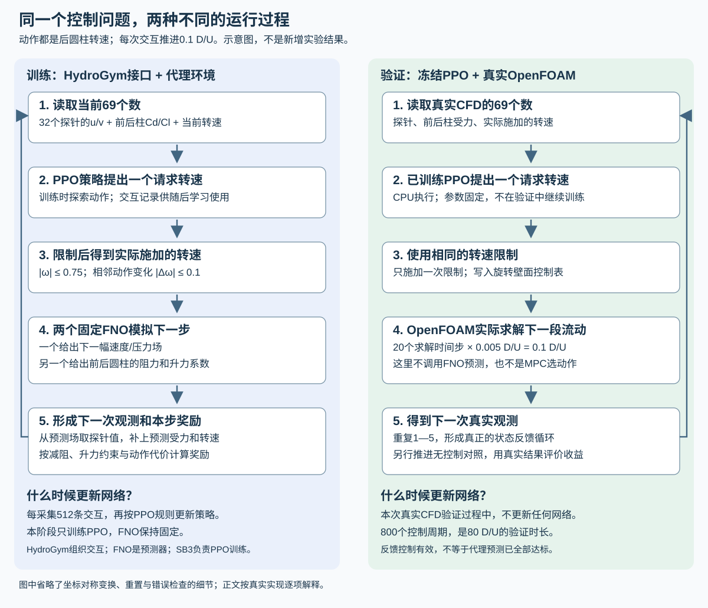
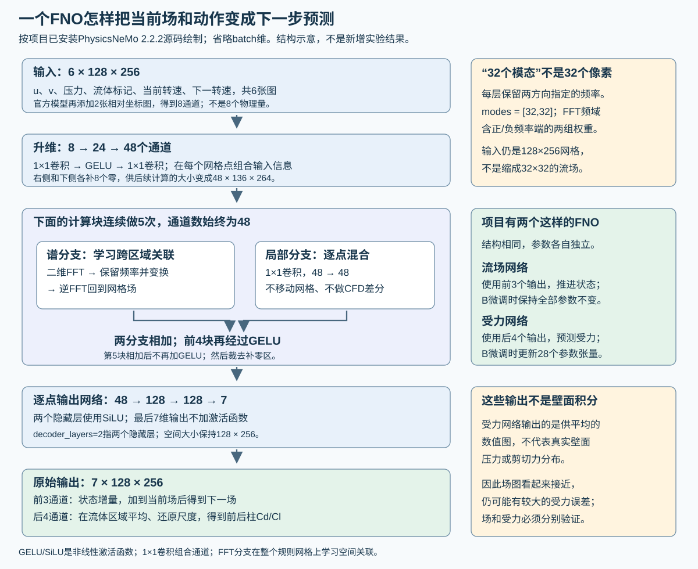

串列双圆柱代理辅助流动控制：总体技术方案与实施蓝图
版本：2026-10-07。本文是对现有项目的增补设计，不替换已有模型、实验或验收结果，不授权重启训练或CFD。当前范围固定为Re=100、L/D=5、前柱固定、后柱旋转；“待实现”均指后续建议，不代表代码已经具备能力。实测结果见图文实验报告。
1. 方案定位：交付什么，不改变什么
研究问题是：能否用真实CFD建立动作条件流场代理，再用该代理辅助控制策略设计，使两个圆柱的总平均阻力降低，同时限制后柱升力波动和平均侧向力，并在真实CFD反馈循环中验证？
这里的“真实CFD”指实际数值求解Navier–Stokes方程得到的结果，不指风洞实测。流场代理是CFD的近似模型，不能自行提供物理真值。论文素材必须分别说明：数值模型误差、机器学习预测误差和控制效果。
项目分成三个交付层次：
| 层次 | 目标及证明方式 | 当前状态 |
|---|---|---|
| 基本案例 | 数据→官方FNO→代理环境PPO→真实OpenFOAM反馈，并报告实际Cd/Cl与动作 | 已贯通；保留B/E082为默认，不重新推翻 |
| 可靠代理辅助控制 | 场与气动力预测满足原协议，动作响应可信；MPC或新PPO能够在真实CFD保持效果 | 完整预测验收未通过；MPC仅有无有效增益的有限探索 |
| 论文级结论 | 公平控制基线、最终策略离散误差、独立重复、计算与控制代价、消融及可复现证据 | 部分具备，仍需专门补实验，不能由基本案例通过替代 |
当前E114新增80 D/U的实测结果为总减阻4.1326%、后柱去均值升力RMS降低17.9229%、平均升力偏置为无控制波动尺度的1.2352%。它支持限定工况的持续反馈效果；不证明跨工况泛化、物理实时性、净节能或整个研究目标完成。
1.1 先把实际做法讲明白：谁在预测，谁在控制
我们训练的不是一个包办所有事情的网络，而是分工不同的两类网络。FNO学习“转速改变以后，流场和圆柱受力会怎样变化”；PPO策略学习“看到当前流动状态以后，下一步应该用多大的转速”。 MPC则不是另一个神经网络，而是一段利用FNO比较候选转速的规划程序。
| 部分 | 实际接收什么 | 实际做什么 | 给下一部分什么 |
|---|---|---|---|
| 流场预测网络 | 当前整幅速度、压力，圆柱位置标记，当前和拟采用的转速 | 用已训练的FNO近似下一小段时间的流动演化 | 下一时刻的u、v、p网格场 |
| 受力预测网络 | 同样的当前场和动作信息 | 用另一个FNO预测前后圆柱分别受到的阻力和升力 | 前柱Cd、前柱Cl、后柱Cd、后柱Cl，共4个无量纲系数 |
| PPO控制策略 | 32个位置的u/v速度、上述4个系数、当前转速 | 用学到的策略直接提出下一步旋转动作 | 1个请求转速，再经幅值和变化率限制 |
| MPC规划程序 | 当前真实场、当前转速、已发生的受力记录 | 让FNO预演5个候选动作，各预测5步，比较代价 | 选一个候选，只执行其第一步，再重新规划 |
| HydroGym环境接口 | 控制策略提出的动作 | 按项目接入的计算方法推进流动，再返回新观测和奖励 | PPO继续学习所需的一次交互记录；它自己不是FNO或CFD求解器 |
这里的“4个系数”不是一个需要另学的新概念：每个圆柱都有沿来流方向的阻力和垂直来流方向的升力，两个圆柱一共4个。文档不再用未解释的“四力观测”概括它们。
PPO看到的69个数也很具体：32个探针×每个探针2个速度分量 + 2个圆柱×每个圆柱2个受力系数 + 当前转速 = 64+4+1=69。FNO看到的则是整幅网格场，显式输入为6×128×256个值。两者输入不同，是因为前者在决定动作，后者在模拟流动。训练PPO时，探针值从代理预测场中取样；真正闭环验证时，改为读取OpenFOAM的探针和受力结果。
1.2 “到底训练了多少步”：三个数字不能混用
| 任务 | 已执行的主要计数 | 数字代表什么，不能代表什么 |
|---|---|---|
| 默认B代理的这一轮微调 | 256个训练窗口；每窗100个预测端点；每8窗累积后更新参数一次，共32次更新 | 它从已有K1模型继续训练，不是从随机参数开始只训32次；流场网络保持不变，更新的是受力预测网络 |
| 已部署PPO策略的训练 | 32,768条环境交互；4个环境每轮各采128步，合计512条，所以64轮采样 | 一条交互是观测→动作→代理返回新观测与奖励；不是一轮CFD求解，也不是一次FNO参数更新 |
| E114真实闭环验证 | 新增800个控制周期，每周期0.1 D/U，共80 D/U | 此时PPO和FNO都不训练；CPU策略实际控制OpenFOAM，每周期推进20个0.005 D/U求解时间步 |
PPO每批512条交互会分成256条一组并重复学习4遍，其实际优化次数和日志中的计数在后面的PPO配置表逐项说明。FNO的“向前预测100步”、优化器的“更新一次参数”、CFD的“推进一个时间步”，都不是同一种步数。
一个重要限制：默认B的这轮微调冻结了流场网络。 所以即便其受力训练误差下降，也不能称“这轮训练提高了流场预测精度”。流场精度是否需要进一步训练，应以独立流场误差诊断决定；已有低精度问题不会因为给模型换个名字而消失。
1.3 具体参数、算法和例子在哪里
为了不让实现细节藏在长篇方案后，页面顶部可直接跳转到以下章节：
- 网络是什么： 代理分册逐层说明两个官方FNO的输入、升维、5层谱计算、局部分支和输出，并解释32个模态、48通道、128宽度各是什么意思。
- 怎样训练： 代理分册列出学习率、损失、优化器、窗口、梯度累积、精度与实际更新次数，并按程序顺序解释一次训练。
- HydroGym到底做什么： 数据/工具栈分册按“重置环境→取观测→提出转速→推进代理→算奖励→返回下一观测”解释实际调用过程。
- PPO怎样学习： 同一分册分别解释动作网络和评价网络、采样轮数、参数更新次数，以及训练和部署的区别。
- MPC怎样选动作： 控制分册给出候选生成、5步预测、代价计算、只执行首动作的算法，并用已有记录展示一个真实决策周期。
下文蓝图说明这些部分如何组织；后面的详细分册说明实际程序怎样工作、参数为何这样设置，以及目前哪些问题仍未解决。
2. 总体蓝图与分层技术架构

图为设计示意，不是新增实验。实线表示已有数据或控制链路；虚线表示仍需验证的MPC及数据补充路线。已有PPO策略部署不在每个反馈周期调用FNO。
| 层 | 主要责任 | 输入→输出 | 不能替代的责任 |
|---|---|---|---|
| 物理仿真层 | OpenFOAM设置几何、网格、边界、旋转与时间推进 | case/restart/动作→U、p、前后柱Cd/Cl、探针、日志 | 不能以FNO预测代替受控效果的最终物理评价 |
| 数据层 | Curator整理、采样、写HDF；DataPipe形成训练窗口 | 原始场/力/动作时钟→可追溯HDF与张量 | Curator不是CFD；DataPipe不是新的求解器或数据生成器 |
| 代理层 | 官方PhysicsNeMo FNO预测状态和气动力 | 当前状态与动作→预测后续场/力 | 模型低loss不等于动作排序可靠；模型不自带本项目控制逻辑 |
| 控制设计层 | HydroGym接口组织环境；SB3 PPO学习策略；项目MPC比较候选动作 | 状态、观测、奖励/代价→策略或动作 | HydroGym接口不自动实现本项目OpenFOAM桥接或训练FNO |
| 真实反馈层 | 固定策略或获准控制器读取CFD观测，施加动作后继续求解 | CFD观测→动作约束→CFD下一时刻 | 代理训练中的奖励不能作为这层的物理收益 |
| 验证与工程层 | 版本、独立评估、资源、日志、恢复、图表 | 源码/数据/结果身份→可审计结论 | GPU繁忙、任务exit0、图像平滑均不是科学验收 |
详细应用与接口见数据和技术栈方案；训练见代理训练方案；控制见控制实施路线。HTML技术方案将三份内容直接附在同一页面，避免只提供链接而无法连贯阅读。
2.1 两条已有/规划路线必须分清
路线A：已有代理训练PPO、真实CFD执行。 离线阶段使用OpenFOAM数据训练FNO；在固定代理环境中用PPO学习观测到动作的映射。部署阶段冻结PPO与观测归一化，每次读取真实CFD观测，生成后柱旋转动作并推进CFD。E114的物理结果属于这条路线。
路线B：待改进的FNO-MPC。 每个真实反馈周期从当前已知状态和历史出发，用FNO比较多个候选动作序列，执行选中序列的第一步，得到新CFD观测后重新规划。其核心难点是代理能否正确预测不同动作之间的差别，而不只是流场整体看起来相近。现有短探索没有建立控制优势，不能仅把预测时长加大就宣布路线有效。
两条路线共享物理对象、动作约束、数据与评价协议，但不要求先废弃PPO再改用MPC。后续MPC应先作为可解释诊断和公平比较对象；只有真实CFD验证后才考虑成为默认控制器。两者混合、在线更新策略和不确定性驱动切换均不是当前已实现功能。
2.2 蓝图之后的总体实施框架：沿着路线怎样开展
蓝图回答“系统由什么构成”，实施框架回答“按什么顺序把它做出来、怎样判断可以进入下一阶段”。下面是统领后续分册的主线，不是另起项目。已有成果填入对应位置，后续只补尚缺的能力与证据。
明确物理任务与评价协议
↓
真实CFD与可追溯数据资产
↓
动作条件代理模型及独立预测评价
↓
控制设计：代理环境PPO / 可解释的FNO-MPC比较
↓
固定控制器 + 真实CFD在线反馈
↓
公平基线、数值验证与独立重复
↓
技术交付与论文结论
反馈：若预测失败，回到数据/代理诊断；
若预测合格而控制无收益，检查目标、动作响应、时域与约束；
若数值或统计证据不足，补对应验证，不重做全部模型。
项目同时保留两个进度：已运行的基本链路已经走到真实反馈与结果归档；严格的代理质量提升链路仍在预测评价阶段，尚不能凭基本闭环成功跳过。这样既保留既有工作，也不把未完成项藏起来。
| 工作包 | 接收什么 | 做什么 | 交付给下一阶段什么 | 主责 |
|---|---|---|---|---|
| WP0 需求与协议 | 物理目标、现有成果、计算条件 | 固定工况、控制量、原指标、比较对象和范围 | 可执行配置、评价协议、当前基线身份 | Lead与物理/评价职责 |
| WP1 CFD与数据 | case/restart、动作程序、网格和时间配置 | 求解、数值QC、Curator转换、时钟与拆分检查 | 原始数据索引、HDF、训练统计、质量报告 | Physics/Data |
| WP2 代理模型 | 合格数据、冻结拆分和父模型 | 训练、分项预测评价、失败定位、一次一因素比较 | 模型manifest、checkpoint、场/力评价和使用限制 | Surrogate＋独立评价 |
| WP3 控制设计 | 固定代理、观测/动作接口和代价协议 | 在代理环境训练PPO，或对MPC动作排名做诊断 | 固定策略或规划器配置、工程测试、控制试验方案 | Control |
| WP4 真实在线反馈 | 已审查控制器、真实CFD初态、资源预算 | 读观测→动作→求解→下一观测；同步推进zero对照 | Cd/Cl/动作全序列、反馈日志、原物理指标 | Control＋Physics/Data |
| WP5 论文验证与交付 | 冻结结果与所有正负证据 | 公平基线、离散误差、独立重复、成本/复现整理 | 有限范围内可支持的结论、图表和复现包 | Evaluation＋Lead |
WP是工作包编号，不是实验结果编号，也不表示上述工作都需要从头运行。现有case、转换、B/E082与E114分别是这些工作包的已完成实例。后续每个任务必须归属某个工作包，并说明补的是哪一个已知缺项；不属于主线的架构试验不自动加入计划。
2.3 阶段之间的交接规则
- 数据交模型： 不是“文件存在”就可以训练；还应有物理来源、字段/单位、时钟、split、归一化版本及质量结果。缺项先补数据检查。
- 模型交控制： 不是“loss降低”就可以换默认控制器；交付预测用途和限制、动作响应误差、固定模型身份及评估结果。工程探索可单独说明授权和局限，不能视为完整精度通过。
- 控制交CFD： 必须固定观测处理、策略/规划参数、动作过滤、reset与初态、配对基线、统计窗及资源预算，不能在线挑选最好结果。
- CFD交论文： 必须保留原始受力和动作、失败与过渡段、数值/统计不足；没有完成的公平性或数值复核不能用文档措辞补成成功。
一次阶段验收只能证明该阶段。例如checkpoint能加载是软件交接成功；预测指标通过是模型证据；配对CFD效果通过是控制证据；论文级可靠性还需要额外验证。
2.4 近期执行组织：先准备完整方案，再按证据批准任务
- Lead维护本框架、当前目标、工作包优先级与已有结论；专业职责只在自己的工作包内提出具体任务。
- 每项任务先给一张实验卡：依据、假设、输入、主要改动、输出、评价、预算、失败后的处理；评估者在运行前确认可以比较什么。
- 数据检查、只读证据分析和方案准备可并行；依赖新模型的PPO训练必须等待该模型结果，不为占用GPU提前启动。
- 任务结束后由独立评价读取真实工件，Lead决定保留、拒绝、补证据还是进入下一工作包，再更新台账和GitLab。
- 最终交付必须同时给“目标完成情况”和“尚缺验证”，不以任务数、运行时长或GPU利用率代替目标进度。
后面的分阶段路线给出更细的验收顺序，三个技术分册给出实际接口与操作方法；它们均服从本节的顶层实施框架。
3. 从专业技术方案角度仍缺什么
| 缺项 | 为什么重要 | 本轮补充与剩余工作 |
|---|---|---|
| 分层目标和验收依据 | 防止把模型拟合、软件成功、控制有效混为一谈 | 本文及三个分册给出层次、状态、实验顺序；不降低原标准 |
| 数据与动作的因果接口 | 错一帧即可让模型使用未来信息，或让控制动作作用错时刻 | 明确状态/动作/force时钟、单位、shape、归一化和reset契约；未来接口变更须回归测试 |
| 数据来源与拆分策略 | 重叠时间窗会使“测试”过于容易；已查看的dev不是独立test | 保留轨迹级来源和已打开状态，不把旧dev重命名为holdout |
| 模型失败定位 | 增大模型或训练步数不能自动解决受力读出与分布问题 | 用场/力、H1/AR、来源组及动作响应分开定位；训练改动必须单独可检验 |
| MPC代价与物理目标对应 | 短预测窗未必能估计长期平均升力与波动 | 明确历史统计、预测时域、动作可行性、代价拆项与真实对照 |
| 工具调用责任划分 | 容易误称“全官方端到端案例”或“HydroGym求解了OpenFOAM” | 列出官方组件、项目适配、运行版本与实际入口，不发明API |
| 最终控制器数值验证 | 约4%的改善不能靠恒转速的网格检查证明数值可靠 | 仍需当前控制器的半时间步/中网格配对复核 |
| 公平对照与独立统计 | 旧周期动作幅值和窗口不一致，不能直接声称PPO优越 | 冻结匹配约束的恒转速/周期基线、预登记新初始相位与统计方法 |
| 运行故障处置和观测质量 | 真实反馈必须处理缺帧、超时、NaN、资源不足 | 已有日志/资源守卫/独立重启审计；自动fallback可靠性需另行验证 |
| 论文复现包与性能说明 | 只有Git源码不能重建外部大数据和检查点 | 列出模型、数据、环境、命令、哈希与已实跑范围；时延/能耗声明须有测量 |
4. 目标函数、约束与指标体系
4.1 物理目标维持原定义
同一统计窗内，令CD=Cd_front+Cd_rear，Cl指后柱升力系数，0与c分别表示配对无控制和受控分支：
减阻率 rD = 1 − mean(CD_c) / mean(CD_0) 要求 rD ≥ 0.02
升力波动比 rL = std(Cl_c) / std(Cl_0) 要求 rL ≤ 1.05
平均升力偏置 bL = |mean(Cl_c)| / std(Cl_0) 要求 bL ≤ 0.10
std为去均值波动尺度；偏置分子不是两个均值之差。控制动作采用无量纲角速度omega=Omega D/U∞，不是表面速度比；alpha=omega/2。现有部署幅值不超过0.75，相邻0.1 D/U反馈周期动作变化不超过0.1。训练奖励的有限历史基准与最终评价窗各有其固定定义，不能互换。
“减阻率至少2%”是当前效果门限，不意味着超过2%的任意短窗就足以支撑论文。还要评价持续时长、过渡段、不同初态及数值误差。新的研究指标只能作为事前定义的补充，不得在失败之后更换分母、窗口或动作约束制造通过。
4.2 四类评价分别报告
| 类型 | 必报内容 | 解释 |
|---|---|---|
| 流场预测 | u/v/p误差、真值/预测/误差图、短时与长时递推 | 流场分辨率及mask影响误差；压力基准必须一致 |
| 气动力预测 | 前后Cd/Cl逐项误差、总Cd、Cl均值/脉动RMS、相位与主频 | 力读出不是壁面积分；不得仅用合并loss遮盖一个力通道退化 |
| 动作价值 | 同起点不同动作的预测变化与真实变化、候选排序及约束风险 | 控制关注的是选哪个动作更好，不仅是绝对值接近 |
| 闭环效果与成本 | rD/rL/bL、动作RMS/变化率、失败率、实际CFD交互数、端到端耗时 | 动作平方只是代价代理，缺扭矩时不能报告净能耗下降 |
现有预测协议的数值判据以绑定审批和独立评估程序为准；新增PSD、相位、动作排序等研究量不在本文凭空宣布“合格阈值”。实施前应根据采样分辨率、基线误差和控制敏感性固定判据，并记录相同评估协议。原Representative256训练面板的normalized RMSE 0.01只是其拟合目标，不是整个项目物理验收线。
5. 分阶段实施路线：保留成果，逐步提高可靠性
| 阶段 | 核心问题和工作 | 验收/交付 | 未通过时怎么办 |
|---|---|---|---|
| S0 现有结果可复现 | 绑定B、E082、数据/观测归一化、镜像、restart、原评价脚本 | 身份检查和安全预检；明确本轮是否实际重跑 | 修复工程依赖，不改科学输入，不覆盖原输出 |
| S1 数据与诊断 | 分来源/动作/相位分析H1与AR；审查标签时间和真实动作条件 | 误差分布、来源覆盖、泄露检查及主导失败假设 | 若证据不足，先补诊断，不直接增大模型 |
| S2 单因素代理改进 | 每次只批准一个与诊断对应的抽样/损失/容量改动 | 同获准训练数据池、固定预算、同精度与评价协议；若抽样是变量，样本序列允许按预案不同；场与力及旧工况保持性共同报告 | 保留负结果和B，不把训练loss下降当新默认 |
| S3 控制相关验证 | 已打开开发面板评估H1/AR、受力窗口与动作响应；必要时批准小型配对CFD动作试验 | 新模型是否能区分有益/有害动作；批准更长控制的理由 | 区分readout、状态递推、代价或时域问题，不盲扫PPO/MPC超参 |
| S4 控制器比较 | 候选通过相应审查后，再训练匹配的新PPO或测试MPC | 固定checkpoint、动作限制、预算和真实反馈对照 | 不把旧策略直接套入不同观测/模型版本后称公平比较 |
| S5 论文物理验证 | 当前控制器的公平开环对照、半dt/中网格、独立初态重复 | 原三物理指标、全部失败、数值/统计不确定度及成本 | 未完成项标缺失，不把连续窗口当独立样本 |
| S6 论文与工程交付 | 方法、消融、对照、数据索引、配置、代码和图片 | 主张与证据逐项对应，可追溯、可阅读、可复现 | 缺大文件/环境应明确依赖，不声称单靠Git从零重建 |
S0–S3改善代理，S5增强当前已有效B闭环的可信度，两条工作可在资源允许时并行。本文是顺序和依赖规划，不是把这些阶段都说成已经启动，也不承诺在原收尾时间内完成新的科研实验。
5.1 下一轮最值得批准的任务
- 先把现有误差解释完整。 已保存的B及候选数据可支持分来源/四力通道分析；优先判断哪类误差与动作选择有关，避免又一次只压总loss。
- 准备最终B策略的离散误差验证。 固定控制器与反馈间隔，设计时间步减半的配对zero/controlled试验，再考虑中网格。需预先确定新初态生成和稳态/统计窗口，不直接复用旧zero当新离散对照。
- 准备公平周期/恒转速对照。 统一幅值、动作变化率、初态、时间窗、求解设置；基线只在开发数据上选择，冻结后再评估。
- 按诊断结果只提出一个代理实验。 未确认主导原因前，不优先增加FNO模态、改三维模型或扩大batch。候选保留旧工况能力且开发集改善后，再推进控制试验。
以上为后续优先级建议，具体执行需要绑定数据、配置、预算与不变评价协议。详见论文验证缺项审计。
6. 数据增加与主动学习：什么时候需要，什么时候不需要
已有真实CFD、训练/开发轨迹和受控数据应优先复用。不能因某个候选失败就默认重做全部数据。追加数据需要回答“新增的状态或动作能检验哪个假设”：例如同工况下此前稀少的转速切换、闭环访问到的状态、某一失真的力响应；不扩展到新的Re或几何来掩盖当前问题。
建议按下列顺序决策：
现有误差证据 → 明确缺失的状态/动作 → 预先指定真实CFD试验
→ 数值QC与Curator转换 → 只并入获准训练版本
→ 同评估协议训练比较 → 真实闭环复核
这可发展为主动数据采集，但当前没有经校准的自动不确定性系统。模型间分歧、OOD距离或高误差样本只是潜在选点信号，不天然等于可信不确定度；选点规则、预算和检验方式需独立验证。Curator可参与数据处理，不能被称为自动决定主动学习策略的现成控制API。
不能把已打开开发集的高误差样本不断移入训练，然后继续用同一开发集作为独立结论。若后续使用其指导采样，应承认开发用途，并另外预登记新的验证数据来源。
7. 计算部署、资源利用与运行管理
主节点Spark负责数据持久化、模型/策略、结果与Git；辅助节点只作为经核验的计算执行端，回传结果并校验身份后才能计入实验。Mac仅用于浏览和文档副本，不在本地生成CFD或训练。现有容器/虚拟环境保持隔离，不升级或覆盖其他项目依赖。
DGX Spark CPU/GPU共享物理内存，资源调度以系统MemAvailable为约束，至少保留20 GiB，不能把GPU显示的空闲与CPU可用内存相加。不同历史任务使用的24 GiB等上限是单任务配置，不代表以后所有任务都可照搬。正式并行前应测单任务峰值与运行时间，并限制累计内存、CPU线程和磁盘写入。
合理并行组合包括CPU处理已保存数据与GPU执行获准训练、独立代码/证据审查与模型任务；不应同时启动多个会争抢统一内存或写同一输出目录的任务。大batch、更多模态、更多worker是否有价值，取决于有效训练吞吐与科学收益，不以占满GPU作为完成标准。
建议运行状态： 待批准、预检、运行中、工程失败、科学未通过、完成评估、已归档。监控应显示真实PID/启动时间/最近进度/结果路径，并区分“CPU数据处理所以GPU低利用”和“任务异常终止”。任务结束应读取结果再决定下一步，不能见到GPU空闲就无条件重启旧训练。
建议故障处置： 缺数据或SHA不符先停止该消费者并定位；非有限物理量保存现场而非继续污染数据；资源不足停止新增任务并按已测策略降并发；恢复前验证restart字段、旧时层、动作和观测时钟。回退到固定策略或零动作不是普遍安全保证，必须在该case中单独验证。当前已有部分守卫和重启审计，不代表上述所有恢复策略均已自动实现。
8. 实验治理与项目长期状态
沿用现有Lead＋专业职责分工，而不是新建一套与历史冲突的管理体系：Lead确认问题、假设和结论；Physics/Data检查数值与数据；Surrogate检查训练/泛化；Control/Evaluation检查控制效果与独立复算。独立审查不由训练进程自己宣布“通过”替代。
每次新实验最少记录：问题、可证伪假设、父模型、唯一主要改动、数据版本与拆分、源码/配置/环境、预算、固定评价程序、成功/失败条件、实际输出、独立复核、解释和下一动作。保留现有PROJECT_STATE.md、EXPERIMENTS.md、experiments/results.csv和DECISIONS.md，不因补写技术方案创造新的科学实验编号。
同样应记录否定结论：例如Representative256在训练面板改善但固定六窗退化，说明“训练内拟合改善”与“已有工况保持性”不同；它不单独证明模型容量不足或某一种采样方法有害。术语、图表和摘要应避免把推断写成已证因果。
9. 面向论文的证据组织
建议文章材料结构：研究问题与现有方法→物理/数值设置→数据与划分→代理方法→控制设计→评价协议→预测与控制结果→消融/失败分析→数值与统计局限→复现说明。技术方案是方法与路线材料，实验报告是结果材料，两者不能互相替代。
| 论文图表 | 应回答的问题 | 当前能用的材料/缺口 |
|---|---|---|
| 总体架构图 | 真实物理、代理训练、控制部署如何连接 | 本文示意图，标明已有/规划 |
| 几何与数值表 | Re、L/D、网格、边界、dt、动作定义是什么 | 主报告实际配置；最终策略网格复核待补 |
| 数据来源/拆分表 | 哪些用于训练、开发和独立评价 | manifest及已打开状态；不包装旧dev为新test |
| 预测场与误差图 | 短/长递推的场误差在哪里 | 当前B保存回放及明确标为历史的H100图 |
| 受力/动作时序 | 减阻是否同时维持升力约束 | E114真实Cd/Cl/omega曲线及固定窗口指标 |
| 学习与消融表 | 模型/控制改动到底改善了什么 | PPO实际日志、B与后续负候选；reward不是物理收益 |
| 公平基线/数值敏感性 | 效果是否超过简单控制且不由离散误差造成 | 仍需专门匹配的最终策略试验 |
| 计算成本与复现表 | 花费多少CFD交互、训练、推理和存储 | 现有日志与manifest；不以单次推理耗时宣称实时系统 |
当前最稳妥的贡献表述是：在限定串列双圆柱案例中实现可追溯的代理训练—真实反馈控制链，并揭示预测精度、训练损失和控制收益需要分层验证。若要进一步声称新的控制方法、显著优于基线或显著节省CFD成本，需要对应的新增比较证据，不能靠使用多个工具本身证明创新。
10. 复现入口、交付清单和阅读顺序
- 先读图文实验报告，明确现有实测结果和未达目标。
- 阅读本文架构及下方集成的三个详细分册，了解数据、训练、控制各层怎样连接。
- 依据多阶段运行说明与模型清单检查外部payload及实际runtime，而不是只clone Git。
- 在Spark项目目录运行已存在的只读入口：
python3 scripts/check_canonical_chain_inventory.py --repo /workspace/fluid_control --inventory docs/CANONICAL_CHAIN_INPUT_INVENTORY_20261007.json。它是身份检查，不执行训练或CFD。 python3 scripts/reproduce_canonical_closed_loop.py默认也是预检；通过不意味着已重跑。本轮仅补文档，不加入自动执行参数。真正复现须使用新的输出目录、明确执行配置与资源约束。
交付包含Markdown源文档、离线HTML、原分辨率图、来源清单、少量CSV/JSON证据和Git版本。大CFD数据与模型留在Spark，路径/哈希由manifest列出；不是全部嵌入网页。新增设计与已有实验分别归档，保证后续写论文时能回答“这是实际结果，还是下一步计划”。
11. 官方资料与适用版本
本轮查阅官方资料确认职责：PhysicsNeMo提供FNO模型接口；PhysicsNeMo Curator提供科学数据处理流水线；HydroGym官方仓库提供流体控制环境接口及后端生态。本文不把任何一个库描述为自动完成全部工程链的产品。
这些网页的latest/main内容可能与本项目冻结版本不同。实际复现以项目锁定的源码、包版本和测试为准；新版本文档用于查证与设计，不构成升级环境或更换模型的授权。具体使用过程和已读本地实现索引见技术栈分册。
串列圆柱代理建模与真实反馈控制：工具栈与实现详解
2026-10-07只读技术说明；不授权训练、PPO、CFD、转换或晋级。范围仅为Re=100、L/D=5、后圆柱旋转案例。
0. 先记住：两种网络、三种“步”
本项目最容易混淆的是FNO和PPO。
- FNO看整幅流场：输入是
6×128×256个数。它回答“给定现在的流场和动作，下一时刻的流场与受力可能是什么”。 - PPO只看69个数：64个尾流探针速度、前后圆柱各两个力系数、当前转速。它回答“根据传感器读数，下一步转多少”。
- 真实部署不运行FNO：PPO仍看同样语义的69个数，但由真实OpenFOAM探针和受力文件提供。
三种步数：OpenFOAM solver step=.005 D/U；控制/代理feedback step=.1 D/U，等于20个solver steps；PPO optimizer step是一次Adam更新。epoch、LBFGS closure、H100递归步都是别的计数。
1. 一帧真实数据怎样走完整条链
1.1 OpenFOAM先产生真值
以t*=120.1为例。OpenFOAM v2512从120.0 restart开始，目录含U,U_0,p,phi,phi_0,uniform/time；constant/polyMesh定义网格，system定义pimpleFoam和.005 D/U步长。
后圆柱rotatingWallVelocity表给出120.0到120.1的角速度变化。20次solver step后写出：
- 整个求解网格的速度
U和压力p； - 32个固定尾流位置的三分量速度；
- 前、后圆柱各自的阻力系数
Cd和升力系数Cl； - pressure/viscous受力分量、时钟和solver日志。
这些才是物理真值；PhysicsNeMo、HydroGym和PPO都不生成它。
1.2 foamToVTK只转换格式
foamToVTK -case <readonly-view> -fields '(U p)' -no-boundary -name <output>
它把OpenFOAM场转成VTK，不训练模型、不改变物理值。项目保存VTK float64 TimeValue；force和omega按该时钟插值，不能先降成HDF float32时间再倒推。
1.3 Curator把不规则网格整理成固定图片
PhysicsNeMo Curator提供Source → Filter → Sink和VTKSource。项目代码：
Source绑定VTK、原始force、omega和配置路径；VTKSource读取真实网格U,p；- 项目Filter在
x=8..25,y=4..11采成128×256规则网格； - 项目Sink写HDF、case/split属性和来源manifest。
每个像素有u,v,gauge-p三张图；另有mask，流体为1、圆柱内部为0。Curator是ETL框架，不是CFD；ROI、时钟、标签、质量门和HDF字段是项目实现。
1.4 HDF一帧有什么
| 名称 | 单帧shape | 通俗含义 |
|---|---|---|
state |
[3,128,256] |
u、v、去均值压力三张图 |
mask |
[1,128,256] |
哪些像素是流体 |
omega |
标量或[1] |
端点实际施加的后柱转速 |
force |
[4] |
前柱Cd、前柱Cl、后柱Cd、后柱Cl |
time |
标量或[1] |
无量纲时间t*=tU∞/D |
“四力”不是四个方向，而是两个圆柱×每柱Cd/Cl。下一帧force是当前输入之后的监督目标。根目录另有train-only normalization和manifest。
1.5 HDF5Reader/DataPipe怎样得到6通道
官方HDF5Reader只按帧读HDF为CPU tensor。项目TandemWindowDataset：
- 读当前和下一
state； - 用train-only mean/std归一化并乘mask；
- 把当前omega铺成
[1,128,256]常数图； - 把下一omega也铺成一张图；
- 拼
[state3,mask1,omega_now1,omega_next1]=[6,128,256]。
目标是delta=normalized(next_state)-normalized(state)的3张图和下一端点force4。H100返回起始场、后续100张真值场、101个动作端点、100组前后圆柱阻力与升力系数标签。Reader负责IO；项目DataPipe定义窗口、mask、动作时序和归一化。
2. FNO到底做什么
项目用PhysicsNeMo 2.2.2官方二维FNO/checkpoint API，基本Cin=6,Cout=7：
- 输出0:3是状态增量；
q_next=(q+delta)*mask，不是直接下一状态； - 输出3:7是四个力的空间读出图，mask内平均并反归一化为Cd/Cl。
保留B是双分支：冻结K1负责未来流场，气动力分支负责前后圆柱的阻力与升力系数。组合wrapper分别准备两支输入；当前B的K1气动力输入历史长度为1，只含当前一帧场、mask及当前/下一转速。通用wrapper支持更长场历史，不表示B实际使用62帧；62点受力历史属于奖励统计。训练编排、H1/AR loss、冻结及manifest是项目代码；PhysicsNeMo负责官方FNO层和checkpoint。
模型检查shape、finite、mask、normalization SHA、架构、epoch、source/runtime SHA、precision和fresh reload。能加载不等于预测准入；保留B完整代理精度仍未通过。

上图先区分两条实际过程：训练PPO时由冻结FNO快速产生下一观测；部署时由真实OpenFOAM产生下一观测，在线不调用FNO。图为方法示意，省略24起点reset循环、动作方向变换及部分审计细节；精确行为以第4、5、7节正文为准。
3. HydroGym到底是什么
HydroGym不是OpenFOAM，不训练FNO，也不是PPO算法。它是环境外壳：把“状态、推进一步、观测、奖励”组织成Gymnasium的reset()和step(action)，让SB3调用。
项目向FlowEnv提供：
Full40CanonicalSurrogateFlow：保存预测场、mask、前后圆柱阻力与升力系数、omega、时钟、探针和reward history；TandemFNOStepper：限幅动作、调用双FNO角色、更新场/力/history；- 项目wrapper：检查观测、reward组成、episode终止及日志。
HydroGym负责标准调用顺序；物理对象、FNO推进、reward、身份和安全门均是项目代码。
4. HydroGym一次reset/step的真实过程
4.1 E082为什么能使用H5
通用Full40CanonicalRewardAudit要求max_steps≥100，E082没有把它直接改成5。E082不可变runtime实际导入项目exploratory_h5_hydrogym.py：先用FlowEnv + Full40CanonicalSurrogateFlow + TandemFNOStepper构造max_steps=5的raw环境，再套ExploratoryH5Audit专用wrapper。该wrapper明确检查H5时钟、62点history和scientific_admission=False，而不是调用原100步admission wrapper冒充通过。
4.2 E082的24个真实reset起点
E082不是只从四条zero轨迹的frame0反复开始。训练先为四个phase b00,b02,b04,b06各建一个raw H5环境；每个phase外再套wrap_phase_cycle，独立按固定六槽循环：
zero/frame0 → m075/frame62 → m0375/frame62
→ zero/frame62 → p0375/frame62 → p075/frame62 → 重复
所以reset panel共有4 phase×6 start=24个已验证真实起点。初次构造raw环境只建立FlowEnv/FNO对象和anchor；真正交给SB3的首次reset()会显式安装该phase的slot0 zero/frame0 packet。每个五步episode截断后，DummyVecEnv保存刚结束episode的terminal_observation，随即调用同一phase wrapper的下一槽reset；不能把自动reset后的新观测误当上个episode末态。
每个packet的安装过程是：
- 从对应HDF frame读真实起始场、mask、前后圆柱的阻力与升力系数、omega；
- frame0从原始restart来源、frame62从该受控轨迹自身force文件读取截止起点的62个真实受力样本；
- 核history最后一个force与该packet的原始force端点一致；
- 建立K1当前态buffer；另把62点真实受力历史装入奖励ledger，不把它冒充FNO场历史；
- 从起始场双线性插值32个探针u/v；
- 返回69维观测，并在
info记录phase、case、frame和六槽索引。
四个phase各自维护六槽计数；终态审计得到每个phase [274,273,273,273,273,273]。四个初始reset加6552个完成episode，对应6556次reset调用。
62点要求仅属于canonical因果reward/H5 wrapper，不泛化到旧rear-only或所有TandemSurrogateFlow。
4.3 69个数字逐项是什么
0..63 : 32个位置，每处依次u,v
64 : 前圆柱Cd
65 : 前圆柱Cl
66 : 后圆柱Cd
67 : 后圆柱Cl
68 : 当前实际施加omega
前四个数是probe0的u0,v0和probe1的u1,v1，不是网格像素。旧rear-only接口只有67维，不能加载69维policy。
4.4 step完整故事
- PPO读69数，输出一个请求转速；
- 项目限制
|omega|≤.75及相邻|Δomega|≤.1； - 当前场、mask、旧/新动作进入冻结K1流场FNO；
- B气动力FNO采用K1：只输入当前这一帧场、mask以及当前/下一转速，不把62点受力历史或62帧流场送进FNO；
- wrapper得到下一场增量，以及前后圆柱的阻力与升力系数，更新场、FNO当前态和
t+0.1； - 从预测场插值32个u/v，拼上前后圆柱的阻力与升力系数和omega，成为下一组69数；
- 因果受力窗产生六项cost和reward；
FlowEnv返回obs,reward,terminated,truncated,info，SB3存入buffer。
训练时69数来自FNO预测场/力；真实部署时相同69维来自OpenFOAM probes/forceCoeffs。FNO负责模拟未来，PPO负责选动作。另存的62点真实/预测受力历史仅用于计算因果奖励中的均值、波动和偏置统计，不属于69维观测，也不是气动力FNO的输入序列。
4.5 H5五步episode
H5即每个episode推进5个feedback steps=.5 D/U，之后切换到该phase六槽循环中的下一个真实packet，而不是总回到frame0。每个packet都自带与其起点匹配的62点真实history。H5限制代理误差累积和训练成本，不证明H100精度，也不是最终80 D/U CFD。
reward窗中真实history逐步被预测样本替换：第1步1个预测样本，第5步5个；没有读取未来真实force。
5. PPO网络与E082训练计数
5.1 保存模型核出的actor/critic
E082保存zip的policy_kwargs={}，但架构由policy.pth权重shape和锁定SB3 2.7.1源码共同确认：
- actor：
69→64→64→1，两个隐藏层Tanh； - critic：独立
69→64→64→1，两个隐藏层Tanh； - actor给一维高斯均值，另有可学习
log_std[1]； - 连续动作使用
DiagGaussianDistribution，不是离散分类器或SAC的tanh-squashed分布； - action space为
[-.75,.75]，项目之后还有速率filter； - critic输出标量价值，只在训练时帮助估计优势，不直接驱动圆柱。
5.2 参数和用途
| 参数 | E082值 | 用途 |
|---|---|---|
| environments | 4 | 四个phase环境实例；每个实例独立轮换六个reset槽 |
n_steps |
128 | 每环境每轮收128步 |
| rollout size | 512 | 4×128条后训练 |
batch_size |
256 | 每epoch分两批 |
n_epochs |
4 | 同一rollout学习4遍 |
| learning rate | 3e-4 |
Adam更新幅度 |
| gamma | .99 |
未来reward折扣 |
| GAE lambda | .95 |
优势估计偏差/方差折中 |
| clip range | .2 |
限制policy变化 |
| entropy coef | 0 |
无额外熵奖励 |
| value coef | .5 |
critic loss权重 |
| max grad norm | .5 |
梯度裁剪 |
| episode length | 5 | .5 D/U代理episode |
| seed | 20261007 |
E082固定随机种子；不等于独立多种子统计 |
5.3 32768、64、256、512分别是什么
- 32768 transitions；每轮四环境共512，所以64轮rollout。
- 每轮512、batch256：每epoch 2个minibatch。
- 每轮4 epochs：
2×4=8次真实Adam step。 - 64轮共512个optimizer hooks，独立审计逐一核过。
- SB3
_n_updates=256按PPO epoch累计，即64×4，不是Adam调用次数。 - 实际日志有6552个完整五步episode；不能用
32768/5把尾部边界当完整episode。
这里的“4环境”是SB3 DummyVecEnv在同一进程中按索引顺序调用四个环境函数，并非四块GPU或四个真正并发求解器。它们分别绑定b00,b02,b04,b06，vector step每次依序推进四个实例；独立终态审计检查了这一固定顺序。
ep_rew_mean是代理H5 reward，value_loss是critic误差，都不是OpenFOAM减阻率。物理结果必须另跑冻结policy配对CFD。
6. reward奖惩什么
canonical reward是项目代码，不是HydroGym/SB3默认：总阻力改善、未达2%减阻惩罚、后柱Cl波动比超过1.05惩罚、平均Cl偏置超过baseline波动10%惩罚、0.01(omega/.75)^2、0.01(delta_omega/.1)^2。即时reward为六项cost和乘-.1；gamma=.99只做跨步折扣。
7. 真实部署与代理训练的区别
冻结policy.zip + VecNormalize在CPU加载。每.1 D/U：从真实case读32 probes和前后forceCoeffs，组成69维；一次policy.predict并过滤动作；写旋转表；真实pimpleFoam推进20步；再读新69维并推进zero分支。
新配对control/zero从匹配初态出发；E109/E114连续恢复分别使用受控、zero自身restart，不能把受控分支重置成zero。部署不调用FNO、不更新PPO、不是MPC。约1.37秒/feedback不证明硬实时，动作平方成本不是净节能。
8. 工具职责速查
| 工具 | 做什么 | 不做什么 |
|---|---|---|
| OpenFOAM | 真实场、探针、受力 | 不训练FNO/PPO |
| foamToVTK | U/p转VTK | 不采ROI、不改真值 |
| Curator | ETL框架 | 不自动定义项目标签 |
| HDF5Reader | 按帧读CPU tensor | 不做窗口/物理对齐 |
| 项目DataPipe | mask、normalize、6通道、H100 | 不产生CFD |
| PhysicsNeMo FNO | 官方算子/checkpoint | 不提供reward/PPO/CFD桥 |
| HydroGym | reset/step生命周期 | 不是solver或trainer |
| Gymnasium | Env/space/终止API | 不定义物理 |
| SB3 PPO | actor/critic、rollout、优化 | 不验证控制收益 |
| 项目桥 | 真实69维、动作filter、分段CFD | 不在线训练policy |
9. 检查、资源与版本治理
数据检查字段/shape/finite/时钟/force/omega/split/normalization；模型检查SHA、通道、precision和fresh reload；环境检查69维、动作、history、FNO冻结和reward；部署检查probe坐标、force列、restart和容器身份。仅对合同实际读取的数据做finite检查，不声称每solver step全网格独立复查。
Git存source/config/tests/approval/report/SHA；HDF、VTK、case、checkpoint、PPO zip、VecNormalize和镜像留Spark。每次运行唯一unit/invocation/output。
DGX Spark为统一内存；保持MemAvailable≥20 GiB，常用startup50/runtime22 GiB门。GPU0、allocator/cgroup、noSwap、CPUQuota、timeout和disk reserve由批准绑定。
锁定运行时不是“当前最新版本”的同义词：
| 组件 | 本项目实际绑定 |
|---|---|
| OpenFOAM | v2512容器及批准中的image digest |
| PhysicsNeMo | 2.2.2；官方FNO/checkpoint/HDF5Reader |
| PhysicsNeMo Curator | 0.1.0独立py312环境 |
| Stable-Baselines3 | 2.7.1 vendored runtime |
| HydroGym | commit 4ab9854dea3d84e38a59c25e0f5835a00cf8225f |
| PyTorch / h5py | 通用锁文件记录2.14.1 / 3.16.0；执行仍以approval runtime SHA为准 |
10. 安全预检、外部依赖与官方资料
cd /workspace/fluid_control
python3 scripts/reproduce_canonical_closed_loop.py
预期PREFLIGHT_PASS_NOT_RUNNING；不创建输出、不启动CFD。执行需新approval/unit/空output；本文不授权--execute。Git clone还缺HDF、normalization、K1/B checkpoint、E082 policy/VecNormalize、restart和镜像；索引见最终模型清单及canonical inventory。
2026-10-07核对的官方资料；latest/master只解释API，项目以锁定版本/SHA为准：
- FNO：https://docs.nvidia.com/physicsnemo/latest/physicsnemo/api/models/fnos.html
- Reader/DataPipe：https://docs.nvidia.com/physicsnemo/latest/physicsnemo/api/datapipes/physicsnemo.datapipes.readers.html
- Curator：https://docs.nvidia.com/physicsnemo/latest/user-guide/curator.html、https://github.com/NVIDIA/physicsnemo-curator
- HydroGym：https://github.com/dynamicslab/hydrogym、https://dynamicslab.github.io/hydrogym/
- Gymnasium：https://gymnasium.farama.org/api/env/
- SB3 PPO：https://stable-baselines3.readthedocs.io/en/master/modules/ppo.html
- OpenFOAM：https://doc.openfoam.com/2312/tools/processing/boundary-conditions/rtm/derived/wall/rotatingWallVelocity/、https://doc.openfoam.com/2606/tools/post-processing/function-objects/forces/forceCoeffs/
10.1 E082关键源码证据索引
以下路径均由E082批准逐字节绑定；短SHA仅为阅读定位，完整清单仍以approval为准：
| 职责 | 不可变路径 | SHA-256 |
|---|---|---|
| H5 raw环境 | artifacts/exploratory_h5_ppo_source_20261006_immutable/scripts/exploratory_h5_hydrogym.py |
cfda96c4...e0532 |
| 24起点/六槽reset | artifacts/exploratory_diverse_h5_ppo_source_20261006_immutable/scripts/exploratory_diverse_h5_resets.py |
a01c0af6...65319 |
| E082训练编排 | artifacts/exploratory_diverse_h5_ppo_source_20261006_immutable/scripts/train_exploratory_diverse_h5_ppo.py |
aae8c9a4...f3040 |
| 因果reward | artifacts/exploratory_h5_ppo_source_20261006_immutable/src/fluid_control/canonical_joint_v1.py |
138ab2b4...e8bd |
| 通用canonical环境 | artifacts/exploratory_h5_ppo_source_20261006_immutable/src/fluid_control/full40_canonical_hydrogym.py |
ca64f7c0...5395 |
| HDF/DataPipe | artifacts/exploratory_h5_ppo_source_20261006_immutable/src/fluid_control/tandem_datapipe.py |
c939e455...3ae |
E082 canonical训练证据见P064_B_SYMMETRY_CANONICAL_PPO_TERMINAL_REVIEW_20261007.md；默认交付策略血缘和大文件位置见FINAL_MODEL_AND_REPRODUCTION_MANIFEST_20261007.md。通用full40代码与E082专用H5/diverse-reset包装器必须一起阅读，不能只拿通用环境推断实际训练reset行为。
11. 当前结论
已实现并审计：真实CFD→VTK→Curator/HDF→Reader/DataPipe→官方FNO→HydroGym/SB3 PPO→冻结CPU policy→真实OpenFOAM反馈。限定工况B闭环通过物理门。
未完成：完整代理精度、跨工况泛化、有效FNO-MPC、网格/时间步独立性、硬实时和净能耗。H5 reward下降、工具链连通或训练loss下降都不能替代科学准入。
代理模型技术设计：从CFD数据到双FNO训练与可靠性验证
2026-10-07修订。面向理解CFD、但不熟悉神经网络训练实现的读者。 本文解释实际保留模型B，并提出未执行的后续诊断；不批准新训练、推理或CFD，不更换默认策略。
1. 为什么需要代理
真实OpenFOAM提供物理真值，但强化学习反复尝试动作，直接进行大量CFD交互成本高。 代理学习近似映射：“当前流场＋当前/下一转速 → 下一流场及圆柱受力”，作为离线策略学习环境。 策略在代理中训练后冻结，回到真实CFD验证。本项目实际部署由CPU PPO读取真实观测，不逐周期运行FNO。 必须分别回答：预测是否准确、策略是否学到可用动作、真实CFD控制是否有效。这三件事不能互相替代。 本case为Re100、中心距L/D5的两个固定中心圆柱，仅后柱旋转；无结构运动方程，不是涡激振动验证。 保留B的真实PPO闭环已通过原物理门，B完整气动力预测仍未通过。链路贯通不等于全部科学目标完成。
2. 网络看什么、预测什么
2.1 相邻时间对与张量
CFD积分步长0.005 D/U；学习帧/控制反馈间隔0.1 D/U，即20个CFD步。 以下n表示学习帧。128×256是规则ROI采样网格，不是OpenFOAM非结构网格。
| 数据 | 不含batch的形状 | 解释 |
|---|---|---|
| 当前流场q_n | 3×128×256 | u、v、gauge pressure，按训练统计标准化 |
| 流体mask | 1×128×256 | 流体1、圆柱内0；标准化后再mask |
| 当前转速ω_n | 1×128×256 | 当前端点动作除action_scale，广播为空间常数 |
| 下一转速ω_(n+1) | 1×128×256 | 区间已指定的动作端点，不是未来真实场 |
| 完整输入 | 6×128×256 | 上述3＋1＋1＋1通道 |
| 网络原始输出 | 7×128×256 | 前3通道场增量；后4通道受力读出图 |
| 下一受力标签 | 4 | 前柱Cd/Cl、后柱Cd/Cl，时刻为n+1 |
ROI为x=[8,25]、y=[4,11]；没有壁面法向、逐面面积或壁面剪切张量。 四个集成力标签来自真实CFD受力记录，不能从这些标签唯一反解真实局部牵引。 动作是保存的实际端点值，不应把名义PRBS在舍入时间上重插值后当同一数据。 action_scale来自绑定manifest，不应把部署上限0.75硬当所有数据集的标准化尺度。
2.2 标准化与还原
流场：z_j=(q_j−μ_j)/σ_j，再乘mask；受力：y_k=(F_k−μ_F,k)/σ_F,k。
全部μ/σ来自批准的train统计并保持原字节；开发集不参与拟合这些统计。
物理预测：Fhat_k=σ_F,k*yhat_k+μ_F,k；物理误差：σ_F,k*(yhat_k−y_k)。
不同通道相同normalized误差不代表相同物理误差；不同σ也改变损失对物理误差的曲率。
这不是参数梯度或Adam更新大小的直接证据。固体mask零值也不是供模型拟合的流体真值。
3. 一个官方FNO内部怎样计算
本次直接读Spark已安装PhysicsNeMo 2.2.2的FNO、二维encoder、谱卷积和decoder源码，没有构造/运行模型。 顶层官方FNO源码SHA与历史批准版本相同，具体证据见末节。

两个FNO结构相同但权重独立；此图说明计算流程，不是新的性能结果。
3.1 实际逐层路径
项目输入 [batch,6,128,256]
→ 官方追加2个相对坐标平面 [batch,8,128,256]
→ 1×1升维卷积8→24 → GELU → 1×1升维卷积24→48
→ 高度/宽度末端各补8个零 [batch,48,136,264]
→ 5层“二维谱卷积分支＋局部1×1卷积分支”
前4层相加后GELU，第5层相加后无GELU
→ 裁去padding [batch,48,128,256]
→ 每网格点独立decoder：48→128→128→7
两个隐藏层SiLU，最终7维线性输出、无末端激活
→ [batch,7,128,256]
decoder_layers=2指两个隐藏层，不是含最终输出在内只有两个线性层。
官方坐标是沿两个数组轴的0..1相对坐标，不是直接加入物理x=8..25、y=4..11。
1×1卷积只混合同一点的通道；它与谱分支相加提供局部映射，不是CFD差分算子。
3.2 模态数、谱分支和边界
谱层对二维空间做rFFT，对保留系数进行可学习的通道混合，再逆变换回空间域。
实际SpectralConv2d有两组权重，分别作用于第一轴正/负频率端32行与第二轴rFFT前32列。
modes=[32,32]不是32×32空间网格，也不是只允许32种流动形态。
每层两组权重形状为[48,48,32,32,2]，末维2为复数实/虚部；局部分支及非线性仍处理完整网格。
padding=8在右/下侧补零，谱计算后裁掉；它处理有限域谱计算边界效应，不等于严格施加OpenFOAM边界条件。
GELU与SiLU引入非线性。本项目使用官方默认encoder GELU、decoder SiLU，不是自行设计激活。
3.3 “28个参数”不是28个数
一个网络有30个参数张量：升维层4、五个谱层10、五个局部卷积10、decoder6。 B训练其中28个张量，冻结两个升维bias；每个谱权重张量本身包含大量标量。 按上述已核官方源码与当前配置逐层计算，单个FNO共有 47,222,783个实数参数标量（约47.22M）：
| 部分 | 参数标量数（含bias） |
|---|---|
| 升维8→24→48 | 1,416 |
| 五个谱层，两组复权重/层 | 47,185,920 |
| 五个48→48局部1×1卷积 | 11,760 |
| decoder 48→128→128→7 | 23,687 |
| 单网络合计 | 47,222,783 |
谱层计数为5×2×48×48×32×32×2，最后的2已计实部/虚部，不应再乘一次。
两个独立网络合计94,445,566个标量；B仅训练气动力网络，冻结24＋48个升维bias标量，因此可训练标量为47,222,711。
这是官方源码shape与配置推导，不是本轮重新加载checkpoint逐tensor求和；不包含优化器状态、激活、FFT临时缓冲或显存开销。
两个网络架构相同，但权重独立、职责不同，不是同一个FNO临时换输出头。
4. 流场网络与气动力网络怎样连接
流场网络输出归一化增量，按z_(n+1)=(z_n+delta_z)*mask更新，不直接把前三输出当下一场。
气动力网络的后4输出做流体mask内空间平均：
yhat_k = sum_xy(mask * raw_force_channel_k) / sum_xy(mask)
Fhat_k = μ_F,k + σ_F,k * yhat_k
这是学习的集成力映射，不是预测真实壁面pressure/shear后积分。
两个FNO都实际计算7输出；flow的受力输出不用来训练aero，aero的前三场输出不用于状态推进。
不能把这说成只计算3通道/4通道的精简网络。
训练B时flow完全冻结，无梯度生成预测状态序列。
aero冻结spec_encoder.lift_network.0.conv.bias、.2.conv.bias，其余28张量训练。
英文lift在此是“升维”，不是物理升力；不是冻结前后柱Cl输出偏置。
预测受力不回填为flow输入，也不输入真实当前force，避免用force直接作预测捷径。
5. 为什么同时训练真实状态一步预测与连续预测
101帧窗口q_0..q_100与101动作端点对应100个下一受力标签F_1..F_100。
H1支在每个n使用真实q_n预测F_(n+1)，即100个独立于预测状态误差的一步任务。
AR支从真实q_0开始，由冻结flow递推qhat_1..qhat_99，aero在这些预测current状态上预测下一力。
两支使用同一保存动作序列与真实下一force；AR除起点外不重置真实状态。
目的在于使aero既能读真实场，也接触flow代理在实际递推中产生的输入误差。
每支目标是标准化力误差：
L=.125*MSE(frontCd)+.125*MSE(frontCl)+.125*MSE(rearCd)+.625*MSE(rearCl)。
每个MSE在100端点平均；完整窗口L_window=.5*L_H1+.5*L_AR。
这是受力预测误差，不是PPO奖励、真实减阻率或机械功率。
使用PhysicsNeMo不表示本次B训练自动采用Navier–Stokes残差、PINN或严格守恒约束：实际目标只有这里列出的受力监督，流场网络冻结。未来增加物理残差属于新的项目损失和待验证方案，不是当前已有能力。
100端点分10块；每块10个H1与10个AR输入拼成一次batch20，块loss乘.1再反向。
分块不是只评价10步，也不是每10步将flow重置成真值。
6. 当前B精确训练配置及作用
| 项目 | 实际配置 | 为什么这样记/改变有什么影响 |
|---|---|---|
| 初始化 | 已训练FC-P026-K1 | 继续微调已有映射，不是随机从零训练 |
| 数据来源 | 原44轨迹＋controlled-b00 | 开环和控制访问状态，须分来源评价 |
| 调度 | 256窗＝192 original＋64 b00 | b00占1/4，8窗组位置0/4替换 |
| 窗口步幅 | base20/train8/train16/b00为20/2/2/1 | 学习帧索引间隔，决定重叠，非solver dt |
| 单窗时域 | 100转换＝10 D/U | 递推长度，不是100次更新 |
| DataLoader batch | 1窗，shuffle=False | 保留预声明顺序 |
| aero内部batch | 10 H1＋10 AR＝20 | 每窗10次调用，非20条独立轨迹 |
| 累积窗口数 | 8 | 原梯度累积后除8，再更新一次 |
| 优化器 | fresh AdamW | 从K1权重开始但不继承上游Adam动量 |
| learning rate | 1.5625e−7 | 更新尺度，小lr不证明32步充分拟合 |
| betas / eps | .9/.999；1e−8 | 梯度一/二阶统计与分母稳定项 |
| weight decay | 1e−4 | 解耦权重衰减，权重变化不全是数据梯度学习 |
| clip | 平均梯度全局L2上限1 | 每8窗裁一次，非各窗分别裁 |
| optimizer更新 | 32＝256/8 | 32次参数更新，非32epoch |
| seed | Python/NumPy/Torch/CUDA均20261003 | 配合数据顺序保证复现，不替代身份检查 |
| precision | float32、high、CUDA/cuDNN TF32开 | 历史B协议，不与highest缓存混比 |
| 诊断 | 训练前后各6个固定原训练窗 | 不更新参数，检查旧窗口能力，不是dev |
一个累积组的顺序：清梯度→依次8窗反向→梯度除8→有限性检查→一次clip→一次AdamW更新。 缺窗或非有限即失败，不跳过困难样本；重复窗口和相邻端点也不宣传为独立样本。
7. 一次B训练的逐项计算账
以下是按已执行源码控制流及256窗/32更新完成记录推导的调用数，不是GPU profiler测量。
每次run()调用frozen_flow_states()，内部100次flow前向；没有跨窗口持久缓存省掉这些调用。
本窗100个current状态暂存在内存给aero使用，是临时缓存，不是跨窗预计算库。
实现还计算qhat_100，但返回current序列只含q_0..qhat_99；最后生成状态不再作本窗后续输入。
| 项目 | 每个训练窗口 | 256个训练窗口 | 梯度/更新 |
|---|---|---|---|
| flow模块前向 | 100次，batch1 | 25,600次 | 无梯度、权重冻结 |
| aero模块前向 | 10次，batch20 | 2,560次 | 建立aero梯度图 |
| aero受力样本数 | 200个四系数向量 | 51,200个向量 | 不等于optimizer步数 |
| backward调用 | 10次 | 2,560次 | 在8窗组内累积 |
| optimizer.step | 每8窗1次 | 32次 | 真正参数更新 |
训练前6窗＋训练后6窗仍走同一run但不反向：额外1,200次flow、120次batch20 aero、2,400个受力向量。 合计训练与这两组诊断：26,800次flow＋2,680次aero＝29,480次模块forward调用。 不含后续独立正式评价、PPO训练或失败任务；官方checkpoint加载本身不是模型forward。 32次更新是有界256窗调度，不是遍历全部原始帧；checkpoint的epoch数字也不能直接当数据遍历次数。
8. 可核验的上游训练沿革
| 阶段 | 起点/角色 | 本次能确认的预算/事实 |
|---|---|---|
| FC-P003C | P009方案绑定的早期epoch2父本 | 本次未重核其完整训练步数，不填推测数 |
| FC-P009 | 后续链使用其epoch0 flow权重；有force-row校准历史 | P026源码审查明确流场父本P009；不把epoch0当零训练 |
| FC-P018 | 气动力上游，flow与两升维bias冻结 | 44 HDF、1,368有序窗、171个8窗AdamW更新，lr1.5625e−7 |
| FC-P026-K1 | flow取P009；aero从P018继续，历史长度1 | 1,368窗、171更新，官方双模型reload通过 |
| FC-P064-B | K1权重初始化，加入受控b00 | 256窗、32次fresh AdamW更新，flow不变 |
因此B不是32步随机训练完整代理。不同阶段优化器/数据不同，不能把171＋171＋32称作同一连续Adam训练374步。
P018/K1工程通过不等于完整预测合格。上游总训练成本未完整重核，本文不提供虚构总epoch数。
依据：FC_P018_TERMINAL_REVIEW、FC_P026_TRAINER_CPU_REVIEW、FC_P026_K1_TERMINAL_REVIEW及B实际manifest。
9. 分层评价：每一层只能证明该层
- 工程层：时钟/数据、梯度、冻结项、官方保存/重载、资源正确；退出0不等于准确。
- 训练内：固定点的四系数误差；Representative256每通道normalized RMSE≤.01仅是该面板拟合目标。
- 原六窗保持性：B和候选同precision、同6起点、H1及连续AR100，原双项均不退化AND不改。
- 开发/正式预测：固定16起点×H1–H5及原force-window/H100按各自协议；已打开开发相位不是新独立测试。
- 真实CFD：独立批准、同restart配对zero、同动作限制/窗口与原物理门；预测失败下探索须单独标明，非模型晋级。
场指标报告mask内u/v/p逐通道relative L2、absolute RMSE、偏差及真/预测/误差图；近零分母另报绝对值。 受力指标报告四系数MAE/RMSE/均值、后柱升力去均值RMS和漂移；totalCd误差先求两Cd误差之和再absolute。 相位/PSD需足够长、等采样的固定窗，预声明去均值/窗函数/频率分辨率；不通过事后相位移动隐去原误差。 H5=.5 D/U不足当完整周期频谱证据。动作价值需同q0/真实历史的多动作CFD真值、所有pair差值/tie/regret。 已发生动作回放不是反事实排序；缺62点历史不得伪造原reward，endpoint cost与gamma=.99回报分开。
真实物理门保持：总平均减阻≥2%；rearCl去均值RMS/zero比≤1.05；abs(meanCl_controlled)/std(Cl_zero)≤.10。
偏置不是两支均值差，也不除以meanCl。omega²不是机械功率，未测扭矩不能称净节能。
10. 已有失败及下一步诊断（未执行）
纯H1 F、Absolute64、AR5 reset、反射、压力辅助、时间增量辅助及晚期覆盖I已经尝试，不更名重复。 I原六窗改善而dev退化；真状态替代也不支持单独归因flow误差。 40/256点LBFGS预算停止时仍下降，未达.01不能证明容量不足或收敛。 Representative256训练loss下降70.84%，同precision六窗H1/AR却退化15.8169%/14.2703%，候选拒绝。 b00的64点贡献rearCl/totalCd改善87.3%/98.7%，所选train8的45点四系数全部变差，旧三family前柱力也退化。 这是来源/通道权衡与选点外失败共存证据，不能区分采样稀疏、梯度干扰、参数漂移。
未来先复用saved数组，不为同结论重复推理；每项新实验预先固定唯一变量、预算、停止规则与反例。 若检验来源梯度干扰：固定B、train-only各来源等量小面板、原目标/precision，一次无更新Gram/cos，另报原比例合梯度。 建议该诊断上限10分钟GPU、0optimizer/0save，须另批；方向一致则反驳该面板干扰假设，不继续盲改权重。 若检验覆盖：固定总样本/forward预算、训练数据池与评价，只改预声明抽样；不借dev反复调整配额。 若检验归一化/读出：先核物理换算、压力/黏性组成、mask归约和真实参数梯度；1/σ²曲率比不证明梯度主导。 已有单窗loss-scale probe不支持前柱Cd必然主导；新来源梯度问题与它不同，但也不能直接证明Adam更新行为。 排查时钟/标签/优化/覆盖后才讨论容量；不得因尚未拟合就默认增层、增modes、扩大batch。
11. 3D、模态和batch仅是有条件方案
安装官方源码支持dimension=3，但二维case不能因此称为三维物理。时间当第三轴是时空算子，须严格因果切窗。 多历史帧改变输入通道与checkpoint合同，须先查已有K4实验，不冒充原K1。 增加modes先核采样/Nyquist、mask几何、padding与参数量；更多频率参数不能恢复输入未包含的真实壁面信息。 更大microbatch若仅工程改动须保留全panel权重：256点25×10＋6时末batch为6/256，不能26个batch等权。 吞吐、closure数、更新数、effective batch是不同变量，不一次全改后称单因素改善。
12. 复现与本次源码证据
train统计不由dev重拟合；case/start/lead/action/target/历史逐项绑定，重复保留，不删除困难点。 保存初值、终值和接受点；线搜索trial不当最佳候选，预算异常恢复参数/optimizer/grad事务。 官方save/freshreload、独立保存数组审计与新的forward是不同证据；场/力/mask/坐标/time/action都应保存供复算。 Git只存源码/配置/报告/清单；大HDF/checkpoint/CFD留主节点。旧approval不是新运行许可。
官方根：.venv-curator-py312/lib/python3.12/site-packages/physicsnemo/。
已读models/fno/fno.py、nn/module/fno_layers.py、nn/module/spectral_layers.py、models/mlp/fully_connected.py。
FNO SHA e64eb9bef031bfdae5d84f0ed35a1ebb27915f18aed4a333b2dd985a083c71a9；encoder SHA 3d7a4c3a6f71358ef842d6f6c2ea642f4a95e02fdd3aed33a36b1525fbab0e2d。
项目已读：scripts/train_tandem_fno.py、src/fluid_control/tandem_datapipe.py、scripts/train_fcp013_independent_force_fno.py、scripts/p026_state_history.py、scripts/p026_history_objective.py、scripts/train_fcp015_window_accumulation.py、scripts/train_fcp064_controlled_aero_ab.py。
B manifest artifacts/fcp064_controlled_aero_arm_b_20261006/dual_model_manifest.json SHA 92766915cb11ca75d313608a5f75e61a218371dcc789f5b44725f0a8260e7891。
norm SHA f1b4607e2eace8f8d3c2c9aa5dcfa642ed43f470ab62fe3e5c051cce0a292bc1；实际历史执行仍以immutable闭包为准。
仍缺完整预测通过、可靠跨工况泛化、最终策略离散误差/公平对照、净能耗/物理实时性和有效优于B的FNO-MPC。
当前保留B真实闭环与全部负结果；新研究先解释一个可证伪问题，不靠更多计算替代验证。
MPC究竟怎样决定下一次旋转：真实例子、算法与技术路线
日期：2026-10-07。先读前两节的逐步说明和真实例子，再按需查阅后面的架构与代码。固定二维Re=100、L/D=5，仅后圆柱旋转；不扩大几何或Re，不降低标准，不批准新计算。
先说结论：已验证有效的是PPO策略闭环，不是MPC。 PPO先在FNO环境学习，部署时CPU策略直接从真实观测给动作，不在线调用FNO。MPC则每次在线用模型预测几个动作后果，再选一个；当前B-H5 MPC十周期只证明预测、选动作、CFD推进全过程能执行，没有证明物理收益。下面不是虚构成功案例。
先看懂一次MPC：收到真实状态，试算五条路，只走一步
MPC是“模型预测控制”。它像每走一步都重新看地图：向前看五步，但只执行第一步，下一次用真实位置重新规划，而不是盲目走完预测路线。 这里的“位置”是流场，不是圆柱位置；两个圆柱不移动，控制变量只有后柱转速。
A. 每隔.1 D/U，收到什么？
CFD每步推进.005 D/U，20个求解步后到达下一控制时刻。.1 D/U是流动时间，不是电脑推理耗时。
MPC收到当前真实u、v、p网格场、流体区域mask、已施加转速，并保留截止当前的62个真实受力端点。
每个端点有前Cd、前Cl、后Cd、后Cl四个力系数。Cd沿来流方向，Cl为横向力；控制关心两柱总Cd和后柱Cl的均值、波动。
当前MPC使用整个采样网格，不是只用PPO的69个观测数。69数的构成及两者区别见后文接口表。
实际数据链是当前U/p→VTK→既有Curator/Mesh采样→原训练均值/std归一化。只读当前与过去，不看未来CFD。
B. 五个候选从哪里来？
从当前ω分别加[-.10,-.05,0,+.05,+.10]，再截到允许的[-.75,.75]。
ω是无量纲角速度ΩD/U；表面速度比是ω/2。幅值边界附近可能有重复候选，代码保留并稳定排序，不临时添加动作。
每个候选假设未来五个端点保持该转速。例如当前0、候选+.1，则规划序列是[.1,.1,.1,.1,.1]。
第一段真实边界表从当前ω线性过渡到候选ω，后续保持；不是第一时刻瞬间无限加速。
C. 怎样向前预测五步？
每条候选从同一真实当前场的独立副本开始。每阶段输入当前场、mask、当前和下一ω；分别调用冻结flow FNO和aerodynamic FNO。
flow给场增量，按下一场=(当前场+增量)×mask更新；aero后四通道经mask平均和原force mean/std还原四个物理力。
同一候选的下一阶段使用刚预测的场；不同候选不共享预测状态，也不更新模型权重。
五候选×五阶段=25个候选阶段，即25次flow和25次aero前向。不是25次CFD，也不是25次真实反馈。
D. 为什么还需要62点历史？
一个瞬时Cl不能说明波动大小，所以每个候选拿62点真实历史的副本来计算统计。
第一阶段去掉最旧真实点、加入第一点预测力；第二阶段再去掉一点、加入第二点预测力；始终保持62点。
第五阶段由57个真实过去点和5个预测点组成。所有这些替换只发生在候选副本，不能污染持久真实历史。
令窗口每点d_i=前Cd_i+后Cd_i、l_i=后Cl_i，则：
d̄ = Σd_i / 62 总阻力均值
l̄ = Σl_i / 62 后柱升力均值
s = sqrt[Σ(l_i−l̄)^2 / 62] 去均值升力波动RMS
D = 1−d̄/d0；R=s/s0；Q=|l̄|/s0
s相当于分母N的总体标准差，不是N−1样本标准差，也不是包含均值偏置的sqrt(mean(l²))。
d0、s0来自事前绑定的zero统计，不读取未来zero分支给规划作弊。原物理标准是D≥.02、R≤1.05、Q≤.10同时满足。
E. 25个阶段怎样变成五个总分？
每阶段计算六项代价（cost），越小越好：
| 中文名称 | 公式 | 作用 |
|---|---|---|
| 减阻鼓励 | −clip(D,−1,1) |
总阻力下降越多，代价越低 |
| 减阻不足惩罚 | max(0,(.02−D)/.02)^2 |
对不足2%的减阻进行惩罚 |
| 升力波动超限惩罚 | max(0,(R−1.05)/.05)^2 |
惩罚后柱波动超过无旋转对照的105% |
| 平均升力偏置惩罚 | max(0,(Q−.10)/.10)^2 |
惩罚平均横向力偏置超过对照波动的10% |
| 转速惩罚 | .01(ω/.75)^2 |
抑制不必要的大转速，并非实测机械功 |
| 动作急变惩罚 | .01(Δω/.1)^2 |
抑制相邻控制周期之间的急剧改变 |
每条候选的五阶段cost做算术平均。不能先平均D/R/Q再代入平方，也不是PPO的gamma折扣回报。 保持转速序列仅第一阶段Δω非零，后四阶段为0，因此第一阶段rate惩罚在H5平均中除以5。 先排除预测场幅值超过绑定界限的候选；在剩余候选中选cost最小者，完全相等再选更小动作变化、再按索引。 非有限数值或所有候选不可行会停止试验，不是自动切换PPO。当前只执行选中序列的第一段.1 D/U。
F. 真实CFD如何纠正预测？
CFD推进20步后，将真实下一时刻的前后柱阻力、升力写入持久62点历史；下一轮重新采样真实U/p作为预测初态。 上一轮预测的场不永久沿用，预测力也不写进真实历史。这限制跨周期漂移，但不能消除每轮五步内部误差，不等于在线训练。
真实单周期例子：t*=148.0→148.1，并非成功控制案例
数值来自已保存B-H5试验result.json的rows[0]。可离线查看完整原始证据JSON：包含全部10次真实反馈，448352字节，SHA-256为f189508e962e17c5e98fa8fa6381c18664a4af9a58bd23da5da6977a50324939。当前ω=0，五个候选都满足场幅值约束：
| 候选索引 | 五步保持ω | H5平均cost | 最大归一化场幅值 | 选择 |
|---|---|---|---|---|
| 0 | −.10 | 1.134950193 | 5.716496 | 否 |
| 1 | −.05 | 1.128682885 | 5.715771 | 否 |
| 2 | 0 | 1.123822407 | 5.715029 | 否 |
| 3 | +.05 | 1.120366777 | 5.714255 | 否 |
| 4 | +.10 | 1.118314753 | 5.713432 | 最小，执行首步 |
实际场界为12.1555837135。正转速不是预设优选，只是本次预测总代价最小。
选中+.1后第一个预测阶段的窗口总Cd均值为2.3001817753，d0为2.2975264190；D=−.0011557457，窗口略增阻。
后Cl均值−.0013094624，波动RMS=1.1776846118，s0=1.1826535013；R=.9957985247，Q=.0011072241。
此阶段六项cost依次为.0011557457、1.1189139427、0、0、.0001777778、.01。主要惩罚来自“未达到2%减阻”，不是升力已超限。
选中+.1的五阶段减阻不足惩罚为1.118913943、1.115200584、1.112812462、1.113117947、1.115045572。
其六项五步均值为.001118873456、1.115018101521、0、0、.000177777778、.002，合计1.118314752756。
注意：+.1第一阶段的减阻惩罚其实略高于−.1，但五步平均后总分较低，不能只看第一步Cd决定动作。
| 148.1端点量 | B预测 | 真实MPC分支 | 真实zero分支 |
|---|---|---|---|
| 前Cd | 1.403103590 | 1.403183222 | 1.403167486 |
| 前Cl | .440633118 | .440540642 | .440580040 |
| 后Cd | 1.086159229 | 1.079788208 | 1.080992818 |
| 后Cl | .242502123 | .293885469 | .296478927 |
后Cl预测偏差约−.05138；这只是单端点，不是长窗RMS或物理验收。下一真实历史追加.293885469，而非预测的.242502123。 本轮候选CPU推理耗时11.18墙钟秒，不能将它与.1 D/U直接比较后声称实时。 全部十周期仍未过2%减阻，且动作与旧K1相同；本例解释算法，不宣称改善。
流程伪代码（不是虚构的可调用API）
校验冻结B、norm、restart、62点过去力及资源；previous=真实当前ω
每个真实反馈周期：
采样当前真实CFD场；校验时刻、mask和有限值
生成previous加五个增量的候选端点，截到[-.75,.75]
对每个候选：
独立复制当前场与62点真实历史
连续5次：双FNO预测→追加候选预测力→重算窗口D/R/Q→六项cost
记录五步均值cost与最大预测场幅值
排除场界不可行候选；按cost、动作变化量、索引选首动作
遇到非有限、无可行候选或工程故障：停止并留证
MPC/zero各推进20个真实CFD步；校验日志和下一端点
只追加真实力到持久历史；previous=实际施加ω
下一轮从重新采样的真实场开始，不沿用上一轮预测场
几种长度的直观区别
| 名称 | 数量/物理时长 | 不是什么 |
|---|---|---|
| 网络K1状态历史 | 当前1帧场 | 不是62帧FNO输入 |
| 统计历史 | 62点，时间戳跨6.1、区间覆盖6.2 D/U，满足6.15目标窗 | 不是预测未来6.2 D/U |
| H5预测 | 每候选5步，共.5 D/U | 不是一次执行5步 |
| 本次MPC十反馈 | 10×.1=1 D/U | 不是长窗控制证明 |
| PPO 800反馈 | 80 D/U真实闭环 | 不是MPC已经完成800步 |
本次MPC关键配置及用途
| 配置 | 固定值 | 作用 |
|---|---|---|
| 起点/终点 | t*=148→149 | 十周期工程对照，不挑成功时间段 |
| solver/控制步长 | .005/.1 D/U | 每次动作后20个求解步 |
| 候选增量 | −.1、−.05、0、+.05、+.1 | 当前动作邻域，不是连续最优求解 |
| 幅值/每步变化限制 | .75/.1 | 保持原执行器约束 |
| 预测/统计长度 | H5=.5 D/U；62点 | 预测未来与统计过去分开 |
| 场界 | 12.1555837135归一化单位 | 排除预测场幅值异常，不是物理速度上限 |
| 推理设备/precision | CPU/high；保留TF32配置 | CPU不实际运行CUDA TF32核；GPU复放是另一个协议 |
| 资源与截止 | 主控8GiB/CPU4；2solver各8GiB/CPU2；均无Swap | 900秒内限/930秒外限/停止宽限120秒，实际批准绑定 |
短预测可能难以改变长窗cost：第一阶段仅替换1/62点，第五阶段也仅5/62，绝大多数是所有候选共享的过去。 这是待验证推断，不是已证唯一根因；非线性惩罚仍可放大微小差异，不能据此宣布horizon必然无效。 优先的下一项建议是核“候选cost差距”与“预测误差可能造成的排序扰动”，先利用已有匹配状态数据，不自动跑长CFD。 只执行过一个动作的日志并没有其余四动作的真实反事实；不同初态轨迹不能硬拼成动作因果标签。若需新增同状态分支，必须下轮另批。 不重复B十周期全流程执行、十包GPU排序或相同动作K1/B十周期来包装新成果；不无依据延长800周期、扫辅助loss或小学习率。 以下章节保留架构、目标和交付边界，具体软件路径集中在末尾便于追溯。
1. 总体目标与当前交付边界
目标由三部分组成：可接受的受控流动代理、与代理兼容的控制器、真实CFD中的约束闭环效果。三者分别验证，不能用训练loss或代理reward替代真实控制效果。
- 已验证路线：FNO环境训练PPO→冻结策略→CPU PPO控制真实OpenFOAM。 默认B保留；E114新增80 D/U达到原三项物理验收标准，累计160 D/U经过已验证恢复，不是单进程不间断或独立工况。
- 未证明收益路线：真实当前流场→冻结B FNO预测→H5 MPC→真实CFD。 十周期只通过工程审计，动作与旧K1一致、预测误差更差；没有有效MPC控制收益结论。
- 完整FNO预测精度尚未达到原验收要求。Representative256训练面板改善但原固定六窗误差恶化，候选拒绝；不能把最新checkpoint当默认模型。
- 基本PPO闭环可以独立交付；这不等于完整研究目标完成，也不要求伪称在线部署使用FNO。
2. 技术蓝图与责任边界
OpenFOAM真实轨迹 → VTK → 官方Curator/Mesh采样 → HDF5/训练集normalization
↓ 官方Reader＋项目DataPipe
官方PhysicsNeMo双FNO训练/保存
↓ 冻结代理环境
HydroGym接口＋项目reward/约束
↓ 开源SB3 PPO
冻结策略＋Vec＋对称坐标适配＋单次动作约束
↓
真实69观测 → CPU策略动作 → OpenFOAM推进0.1 D/U → 下一真实69观测
探索分支：真实当前网格场 → 双FNO候选H5 rollout → MPC选首动作
（不替换上述已验证PPO；未实现自动混合fallback）
官方库负责模型、数据读取/采样及训练基础设施；HydroGym提供环境接口，SB3实现PPO。坐标映射、数据组织、force pooling、损失、奖励、OpenFOAM传输、MPC选择器、执行审批与审计均是项目代码，不称官方内置控制方案。
当前数据链路入口：scripts/curate_tandem_cfd.py、src/fluid_control/tandem_datapipe.py。项目DataPipe围绕官方DatasetBase/HDF5Reader，不能把项目adapter本身称官方组件。模型身份、norm、split、配置和源码均以每次approval绑定为准。
3. 物理量与在线接口
无量纲时间t*=tU∞/D；D=U∞=1时数值等于case时间，但D/U不能自动解释为现实秒。CFD dt=.005，控制间隔=.1 D/U，每反馈20个solver step。
动作ω*=ΩD/U∞；表面速度比为α=ΩD/(2U∞)=ω*/2。原限制|ω*|≤.75、每反馈|Δω*|≤.1，后者等价最大速率1/(D/U)。控制表在求解区间内线性插值，不是把策略请求无约束直接交给旋转边界。
物理69观测严格按序：
| 索引 | 内容 | 实际来源 |
|---|---|---|
| 0–63 | 32探针，每探针u、v交错 | 训练为预测网格场双线性插值；部署为真实CFD probes |
| 64–67 | front Cd、front Cl、rear Cd、rear Cl | 训练为代理力；部署为真实force coefficients |
| 68 | 当前已施加ω | 控制状态；物理filter使用保留的double上一动作 |
训练/部署位置与顺序一致不意味着两种采样数值逐位相同。字段接口见src/fluid_control/tandem_hydrogym.py:get_observations及scripts/run_p064_symmetry_canonical_b_ppo_long_cfd.py。
对称坐标转换见src/fluid_control/symmetry_canonical_wrapper.py：反排y探针、v/Cl/ω变号、u/Cd不变；策略只调用一次，按当前反射方向恢复物理动作，再执行一次幅值/速率约束。不能重复限制动作，也不能用下一时刻的反射方向反解当前动作。
4. 代理模型训练与预测时序
双FNO为两个官方FNO实例：flow分支提供三个归一化场增量，aerodynamic分支提供四个力通道的网格读出。官方raw输出为7通道，并非新造4输出网络；气动力读出取后四通道，经流体mask空间平均与原force mean/std还原物理系数。
当前K1历史长度下，输入包含当前归一化(u,v,p)、mask、当前与下一施加ω/action_scale，共6通道。flow更新为q_next=(q+delta_q)*mask；不是将前三输出直接当下一场。气动力对应从当前状态和该区间动作预测下一端点力。
原B训练入口scripts/train_fcp064_controlled_aero_ab.py：fresh K1父、原192＋受控b00 64个窗口、256窗/32更新、8窗梯度累积；flow和两个lifting升维层bias冻结，只训练28个气动力参数张量。不是“冻结两个升力网络bias”。
原目标为.5 L_H1 + .5 L_AR100：H1使用真实当前场；AR使用冻结flow产生的连续预测场。force误差按训练集std归一并采用既定四通道权重；分块反传、累积/clip/AdamW及固定顺序都属于实验协议，不能悄然修改后仍称同一B。
训练内拟合、独立开发误差、动作响应、场误差和控制收益必须分开。固定小面板充分拟合只检验该优化方案对该面板的拟合能力；改善不证明泛化，预算未达目标不证明网络容量不足。
5. PPO：代理环境训练与真实部署不是同一过程
实际E082协议见scripts/train_p064_symmetry_canonical_b_32768_ppo.py:PROTOCOL：24个固定reset，4环境、32768交互、seed20261007、每episode5步；n_steps128、batch256、4epochs、LR3e−4、gamma.99、GAE.95、clip.2、vf_coef.5、max_grad_norm.5。保存最终策略，不据开发效果选中间checkpoint。
代理reset从绑定真实初态载入场、力、当前动作与真实62点因果力历史；不能零填历史或偷看未来力。Full40CanonicalSurrogateFlow.reset检查历史末端与当前force/时间一致。每step依次进行物理动作约束、双FNO推理、场/力/history更新，再计算reward和下一69观测；非有限或场界异常显式终止。见src/fluid_control/full40_canonical_hydrogym.py。
PPO的5步episode只有.5 D/U；reset带入真实历史不代表学习过程已经经历完整长周期控制。后续真实800/1600反馈用于独立检验持续控制，不能由训练episode直接推出。
真实部署冻结策略与Vec状态，CPU执行对称坐标适配后的策略，不更新权重、不运行在线FNO。实际序列是真实当前69观测→对称坐标转换→策略预测→动作符号恢复→单次动作约束→两支CFD推进→真实下一69观测；配对无旋转对照是独立求解分支，不参与策略选动作。保留完整原始日志与反馈闭合证据。
6. 原物理目标与实际reward
令D=1−mean(Cd_front+Cd_rear)/mean(Cd_total_zero)，R=RMS(Cl_rear−meanCl_rear)/RMS(Cl_zero−meanCl_zero)，Q=|meanCl_rear|/RMS(Cl_zero−meanCl_zero)。原三项验收标准为D≥.02、R≤1.05、Q≤.10，必须同时满足。Q不是减去无旋转对照平均升力后的偏置。
现有统一目标的六项代价（不是本文新设计；名称及作用见前表）为：
c = −clip(D,−1,1)
+ max(0,(.02−D)/.02)^2
+ max(0,(R−1.05)/.05)^2
+ max(0,(Q−.10)/.10)^2
+ .01(ω/.75)^2 + .01(Δω/.1)^2
PPO即时reward = −.1 c；PPO回报另按gamma=.99折扣。
代码src/fluid_control/canonical_joint_v1.py与Full40CanonicalRewardAudit.step核reward分量和总值。窗口未ready时四个物理cost置零、动作项仍存在；当前正式reset要求真实历史就绪。动作平方只是代价代理，未核扭矩/功率前不称净节能。
7. H5 MPC：状态、历史与局部优化
当前薄入口scripts/run_p064_b_causal_history_h5_feedback.py复用原K1 CPU十周期传输，仅绑定当前B双FNO。实际CPU/high+TF32协议保留；GPU highest/noTF32仅另有十包推理排序一致性复放，不等价于GPU真实长闭环已验证。
状态是当前真实CFD网格场、mask、上一实际ω，以及截止当前的62×4真实力历史。实时网格桥接沿原代码，不从未来CFD拿输入；K1网络自身的状态历史长度1与reward的62点力历史是两种不同历史。
src/fluid_control/exploratory_causal_history_horizon.py生成五个候选：clip(ω+[-.1,-.05,0,.05,.1],−.75,.75)，每个候选保持5步；分别rollout flow和aero，总计25个预测阶段。比较五候选的既有六项cost在H5上的算术均值，不是PPO折扣回报；仅执行获选首动作，下一周期重新观测并规划。
候选场非有限或越过绑定normalized-state界不得成为有效选择；相同cost按更小动作变化量、再按候选索引稳定决胜。该实现是有限候选rolling-horizon，不宣称全局最优、连续优化或通用CEM。
H5=.5 D/U预测窗；62点每.1采样，时间戳跨度6.1、按区间覆盖6.2，满足原6.15 D/U统计窗。每个候选从同真实历史的副本开始，每预测一步仅在候选副本中删最旧点、加入该预测力；五步后最多5个预测点，不是预测完整6.2 D/U未来。
持久历史只由实际下一CFD力推进，见exploratory_causal_history_mpc.append_actual_endpoint。候选预测不能污染下一真实规划历史。短预测相对于长统计窗的贡献有限，这是需验证的设计限制，不是自动改horizon、reward或阈值的理由。
原B十周期采用fail-stop，无PPO fallback。非有限、无可行候选、资源/CFD故障均保留失败，不自动换策略继续并冒称纯B-MPC。独立可杀推理进程、超时后清理再切冻结PPO、混合控制标记与故障注入测试属于未来工程建议，尚未实现或批准。
8. 失败定位与证据层级
| 故障/现象 | 首先检查 | 不能推导 |
|---|---|---|
| loader/precision/路径失败 | manifest、实际import、runtime、SHA、unit日志 | 模型科学失败或训练无效 |
| H1真实场输入误差大 | 场/动作/目标时钟、norm、读出、训练拟合与覆盖 | 唯一归因flow误差 |
| AR明显恶化 | 同初态H1/AR分开、冻结flow漂移、输入分布 | 用H1平均改善掩盖AR失败 |
| MPC排序/动作相同但预测变差 | 全候选cost、可行界、tie-break、真实下一力 | 工程可运行即控制收益 |
| 短窗物理好、长窗失败 | 固定过渡窗、均值偏置、持续反馈、baseline | 挑最好时间段宣称通过 |
| GPU/CPU数值改变 | 同真实包全候选排序和动作对比、precision绑定 | 速度更快即精度提高 |
当前B10与旧K1动作相同且B selected-next-force误差更大，不能仅凭GPU加速证据自动扩800CFD；需要单独说明待检验的模型/控制收益假设。
9. 下一阶段验收矩阵与顺序（建议，须另批）
| 次序 | 证据/验收 | 不通过时 |
|---|---|---|
| 1 固定交付 | B模型/policy/Vec/norm/config与历史审批可校验；安全入口默认只读 | 修身份/缺件，不覆盖默认B |
| 2 代理候选 | 工程保存与official reload；原six H1/AR双不退化；原16起点×H1–H5开发指标，比较precision一致 | 保留失败，不自动dev/PPO/CFD；执行范围由Lead逐项授权 |
| 3 兼容控制 | 若换surrogate，重新训练兼容PPO；不沿用旧策略冒充新代理策略 | 分开诊断代理与policy，不偷换reward |
| 4 在线工程 | 固定短段真实输入/预测/动作/下一端点配对；因果历史、资源清理、时钟通过 | fail-stop并诊断，不自动延长 |
| 5 真实效果 | 配对zero，预声明过渡/统计窗；原2%/1.05/10%与所有固定分窗，不事后挑窗口 | 点估计失败保留；不降低门限 |
| 6 论文强证据 | 最终策略dt/网格复核、公平恒转速/周期、冻结多seed/独立phase、扭矩代价 | 明确证据不足，不能由单条成功外推 |
训练候选、MPC工程与公平基线不应一次联合改动；先提出唯一可证伪问题、固定数据/预算/停止规则，再执行。达到训练误差停止准则只允许保存指定终态，不自动晋级；超时/OOM/非有限须区分工程失败与科学拒绝，不能拿未完成checkpoint补结果。
已有周期P10/P20失败，但幅值1、历史t80初态与窗口120–160不同于当前B，不能称公平优越；已有恒转速网格比较也不替代最终B策略验证。八个已选phase均已打开，E114是同case延长，不是独立holdout。详见CLOSED_LOOP_PAPER_VALIDATION_GAPS_20261007.md。下轮仍限定Re100/L/D5。
10. 复现与交接
安全入口：.venv-curator-py312/bin/python scripts/reproduce_canonical_closed_loop.py，默认只读PREFLIGHT_PASS_NOT_RUNNING。历史approval是证据，不是复跑许可证；实际执行需新的唯一output/unit/审批、输入SHA及资源检查。
详见主报告、多阶段runbook、正式模型清单和拒绝候选清单。本文引用当前repo接口解释实现；每次运行的不可变源码闭包/参数以对应approval为准，不能用以后修改的同名脚本替代历史运行身份。
真实例子来源：artifacts/p064_b_causal_history_h5_real_cfd_20261007/result.json的rows[0]；五候选值来自decision.h5_cost/state_bounds/candidate_reports，真实力来自actual_endpoint_forces，预测力来自selected_predicted_next_forces。数值只作显示舍入，无新推理。对应批准为docs/P064_B_CAUSAL_HISTORY_H5_CFD_APPROVAL_20261007.json，证据见B-H5终态独审。
限时本轮科学任务截止12:20:45 UTC、归档截止12:50:45 UTC；旧自动启动timer已停用。本文没有授权新的训练、MPC、CFD或超时后续跑。